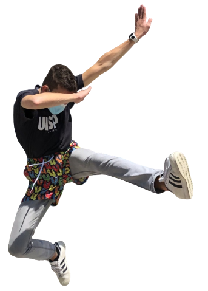

Chi sono?
Ciao!
Mi chiamo Tommaso, ho 20 anni e abito a Como, Italia.
Fin da piccolo ho avuto una certa propensione verso tutto ciò che avesse all'interno ingranaggi e in generale meccanismi complessi che ne governavano il movimento. In particolare, sono sempre stato estremamente affascinato da macchine pesanti da cantiere come gru, camion ed escavatori.
L'idea che l'uomo sia in grado di aumentare la propria forza lavoro costruendosi da solo il mezzo per riuscirci è probabilmente quello che da sempre più mi attira. Per questo motivo attualmente studio ingegneria meccanica presso il Politecnico di Milano e spero in futuro di poter contribuire anche io con le mie conoscenze e la mia passione allo sviluppo e al miglioramento tecnologico nei settori della meccanica "pesante".
L'ho detto che gli escavatori mi attirano?
Le mie passioni
Parallelamente alla passione per la meccanica, negli ultimi anni mi sono avvicinato anche al mondo della programmazione e della robotica. Avendo frequentato infatti un liceo ad indirizzo scienze applicate, ho ricevuto a scuola le basi della programmazione in C e i concetti base dell'informatica.
Partendo allora dalla scrittura di programmi più complessi e maggiormente strutturati sono arrivato ad avere una conoscenza di base (e sottolineo di base) dei linguaggi principali per lo sviluppo di programmi, applicazioni web e analisi dati.
In particolare, da ormai un paio d'anni ho orientato la mia programmazione verso dei veri e propri sistemi in grado di fondere a pieno gli interessi meccanici e quelli informatici. Da quando infatti mi è stato regalato Arduino, molto del mio tempo lo dedico a creare progetti che includano il suo utilizzo.

La scheda programmabile Arduino Uno
Questa semplice scheda offre infatti la possibilità di creare delle vere e proprie macchine o robot in grado, tramite sensori, di interagire con l'ambiente. Il codice e la scheda permettono quindi di trasformare una struttura inanimata, in una macchina che alle volte può sembrare anche in grado di pensare da sola.
Il contatto con l'ambiente
Può sembrare controverso viste le mie passioni ed interessi, ma un aspetto importante che per me non deve mai mancare, è il contatto con la natura. Credo infatti fortemente nel contatto con la natura quale fonte di ispirazione per i miei progetti e non solo: molte volte mi ritrovo a guardare il cielo completamente perso nei miei pensieri o ancora più spesso una corsa nei boschi mi aiuta a schiarire le idee e a rasserenarmi.
Probabilmente per questo motivo, da ormai 5 anni, pratico “Orienteering” o “Corsa d’orientamento”.
.JPG)
Io impegnato durante una gara
Per chi non lo sapesse, questo sport consiste nella ricerca con l'uso di mappa e bussola di alcuni punti di controllo immersi completamente nel bel mezzo di boschi e foreste. La libertà di scelta del percorso da seguire, unita alla componente tecnica, essenziale per l'orientamento con la bussola e cartina, nonché la componente fisica, necessaria ai fini di gare molto lunghe e non, rende questo sport uno dei più completi e dei più affascinanti dal mio punto di vista. Peccato sia poco conosciuto se non a livello scolastico...